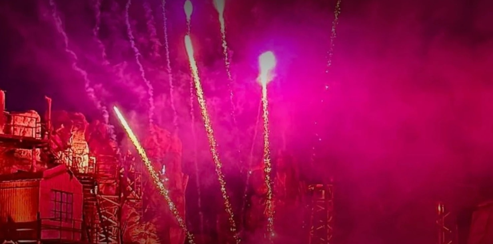
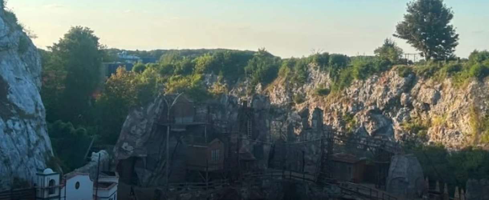

KARL-MAY-SPIELE · BAD SEGEBERG
200.000+ Besucher 2026.
Bist du 2027 dabei?
Bist du 2027 dabei?

Großes Finale-Feuerwerk am Kalkberg Winnetou auf Iltschi
Winnetou auf Iltschi„Im Tal des Todes“ 2026

Über 7.500 Plätzeeine der größten Freilichtbühnen Europas
Begrenzte Busplätze!
Juli 2027 · ab Erfurt